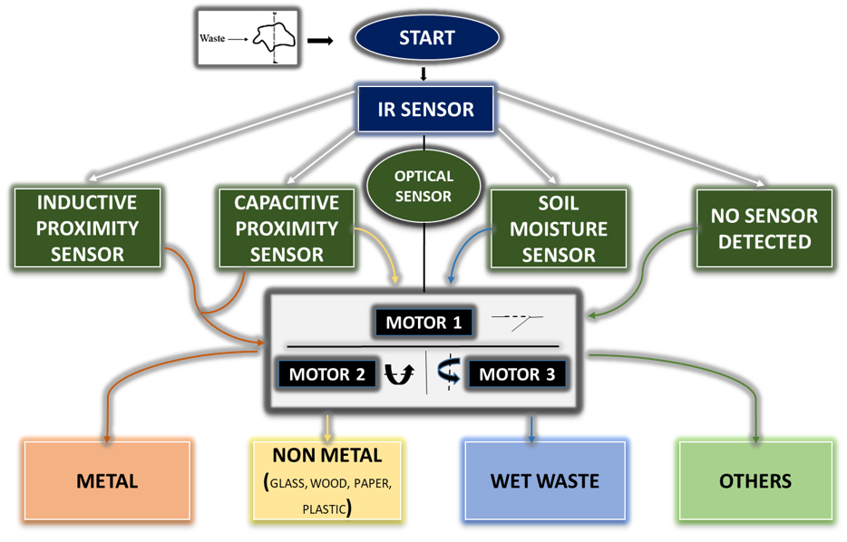
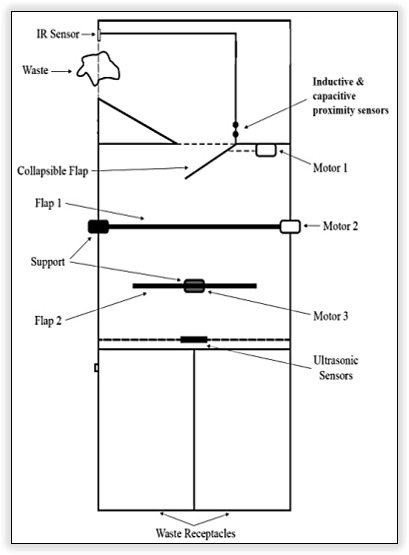

ATM BIN
AUTOMATED TRASH MONITORING BIN
In our country, garbage plays a vital role in few missions like Swachh Bharath, Clean India, etc. In this kind of missions, garbage segregation is a major concern. India is now the world's third-largest garbage generator. The segregation, transport, handling and disposal of waste must be managed properly. So, we have developed & designed a modern automation system that is an AUTOMATED TRASH MONITORING BIN (ATM BIN), which will be able to segregate different kinds of trashes and store them in a particular chamber. Segregation of solid waste may be done indirectly using sensors to detect the material properties of the object, such as its inductance and capacitance. A mixed use of sensors is able to distinguish wastes such as metals, glass, and wet waste as an object passes through its range and to measure the level of the trash in each chamber.
INTRODUCTION
In this busy world it's difficult for people to separate the trash, especially lazy people
always been looking for easy & modern innovation which makes their work easier Too much time consuming for a busy person.
By taking all these things into consideration, we have developed & designed a modern automation system that is an
AUTOMATIC TRASH MONITORING BIN (ATM BIN), which will be able to segregate 4 kinds of trashes and store them in a particular chamber.
our idea of ATM Bin is a smart way to segregate garbage in this modern world. Our automation system can perform
• Automatic separation of different types of garbage like a plastic bag, metal can, plastic etc.,
• Automatic open of Trash Bin cover by a hand motion sensor.
• Alarm when any of the trash chambers are full
• Making a modern, intelligent trash bin.
Segregation of solid waste may be done indirectly using sensors to detect the material properties of the object,
such as its inductance and capacitance. A mixed use of sensors is able to distinguish wastes such as metals, glass,
and wet waste as an object passes through its range.
METHODOLOGY
Our main aim is to reduce the usage of many trash bins by making a compact and multi waste storing bin. It creates a cleaner, safer, more hygienic environment and enhanced operational efficiency while reducing management costs, resources, and road-side emissions. In many other ways our ATM bin was developed & will be introduced in the world.
BLOCK DIAGRAM

COMPONENTS
Infrared sensor
IR sensor uses the principle of electromagnetic induction to detect the object. when the waste is dropped into ATM, IR sensor detects the waste.
In the ATM bin IR sensors will continuously monitor the status of the bin. If the bin reaches more than certain weight, the weight sensors will
trigger the message to the concerned authority. If the certain threshold level is reached, the level sensors will trigger the message to the concern authority.
Inductive Proximity Sensor
The inductive proximity sensor detects magnetic loss due to eddy current that are generated on a conductive surface by an external magnetic field.
An AC magnetic field is generated on the detection coil, and changes in the impedance due to eddy currents generated on a metallic object are detected.
It is used for positioning and detection of the metal objects. Ferrous metals such as iron and steel while non-ferrous metals such as aluminum and copper.
Capacitive proximity Sensor
A capacitive sensor is an electronic device that can detect solid or liquid targets without physical contact. To detect these targets, capacitive sensors
emit an electrical field from the sensing end of the sensor. Any target that can disrupt this electrical field can be detected by a capacitive sensor.
It can detect the presence or absence of virtually any object regardless of material.
Moisture Sensor
This sensor is consisting of mainly two parts, one is Sensing Probs and another one is the Sensor Module. The probes allow the current to pass through
the object and then it gets the resistance value according to moisture value in object. A resistive soil moisture sensor works by using the relationship
between electrical resistance and water content to gauge the moisture levels in the object. You'll observe these sensors to possess two exposed probes
that are inserted directly into the soil sample.
Ultrasonic Sensor
Ultrasonic sensors work by sending out a sound wave at a frequency above the range of human hearing. The transducer of the sensor acts as a microphone
to receive and send the ultrasonic sound. Our ultrasonic sensors, like many others, use a single transducer to send a pulse and to receive the echo.
Arduino mega
the Arduino mega is a microcontroller board based on AT mega 2560.

The automated waste segregation system can successfully segregate waste at source. This is possible with the help of machine learning and material sensors. This system can be easily produced again because multiple waste bins will be able to use the same model that was trained. This system, if further improved, may be used to improve the waste management situation. The model that was trained can also be applied to different uses not only for this system. One of the biggest pains is the possible wide variation of waste that may be inputted into the system. Therefore, for the system to be accurate, the dataset needs to be quite large and continuously updated. The ability for the users to validate the images taken for the waste classification model is invaluable because it will allow for the dataset to grow and for the model to be retrained to be more accurate. The system has its own limitations. It can only segregate waste one at a time and its accuracy can be improved. Also, wastes that are large cannot be segregated with the system, and the time it takes for waste to be segregated is too long. Thus, improvements can be made to improve the whole system. The design for the receptacle should be changed to allow for larger wastes to be segregated using the system. The model could be retrained further with a larger dataset to allow for the accuracy of classification to improve. The code could be optimized to lessen the time it takes from sensing the waste has entered the system to it being segregated. Since, the time for segregation can be minimized multiple wastes can be thrown in a shorter span of time. Finally, additional waste classes could be added to the model. This would help in recycling more materials.